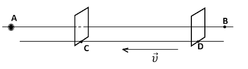
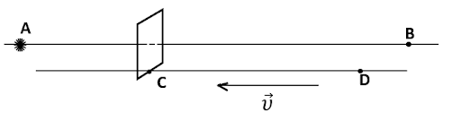
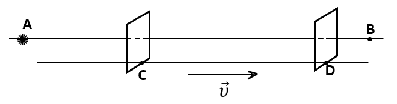
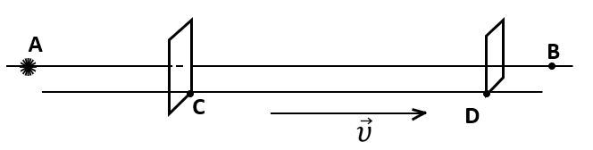
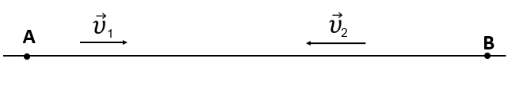

Even in classical mechanics, the energy of any atom depends on the gravitational interaction. Therefore, the frequency of radiation emission by any atom must also depend on this interaction, for example, on the atom's altitude above sea level. Hence, even according to classical mechanics, the times of atomic clocks located at different altitudes with respect to the planet must differ from one another, and the theory of relativity has absolutely no relation to this fact. Whence it follows that the standard definition of a second is not correct. It is necessary to indicate in this definition at which point on the planet the reference measurement of one second was made, e.g., at what height. Let two atoms of the same isotope be located on the same straight line passing through the Earth’s center, but at different distances from it. The difference between the energies of those two atoms, when the latter are in the same stationary state, is determined by the formula from classical mechanics, ∆E≈g1 g2m∙h, where m is the mass of either atom, h is the distance between the centers of the atoms, and gi (i = 1,2) is the acceleration of free fall at the point where the ith atom is located. It is well-known that in the case of a single constant electric charge or a single permanent magnet, we have a purely electric field in a certain inertial reference frame (IRF), a purely magnetic field in another IRF, and combinations of electric and magnetic fields in other IRFs. Another well-known fact consists in that if we consider the motion of two charged particles---e.g., two electrons in an accelerator or the outer space, ---at identical constant velocities in the same direction along parallel lines that are separated by a very small distance (approximately equal to three classical electron radii), the interaction force between them will be different in different IRFs, even the force directions will be different. Let us have an explorer at a space station outside the solar system, and let a spaceship move at a constant velocity almost equal to c with respect to the space station. Let at this velocity 1-2с2 = 1365*24*3600*1012 ≈3.17×10-20. There is also another researcher in the spaceship. Suppose that each of those researchers at the space station and the spaceship lives at least 30 years. Let the proper time interval for the explorer at the spaceship be equal to 10-8 s. The researcher at the station observes the events occurring at the spaceship, and the corresponding time interval equals 10,000 years for him. That is, at the end of this interval the researcher at the station must be dead, whereas the researcher at the spaceship remains alive (this is the first conclusion). On the other hand, let the researcher at the spaceship observe the events occurring at the space station. In this case, if the proper time interval for the researcher at the station is equal to 10-8 s, then this time interval is equal to 10,000 years for the researcher at the spaceship, i.e., the researcher at the spaceship must be dead, whereas the researcher at the station is alive (this is the second conclusion), because the IRFs are on an equal footing. The first conclusion contradicts the second one, and, since aging and death are irreversible processes, both conclusions together contradict the laws of thermodynamics. Instead of the researchers, a muon or another particle can be located at the space station, and another muon or particle at the spaceship. Then, in 10-8 s, the first muon does not exist more, and the second one exists in the first reference frame (the first conclusion), whereas the first muon exists and the second one does not exist in the other reference frame (the second conclusion). This is also a contradiction that cannot be logically explained. This means that IRFs are not equivalent, i.e., the first postulate of the special theory of relativity is not true; accordingly, the velocity of electromagnetic waves (EWV) v must depend on the selected IRF. Nowadays, the EWV in vacuum in all IRFs is assumed to be identical and equal to c = 299792458 m/s. This is also a well-known fact. Below, some examples of experiments are proposed that will make it possible to find out that the EWV in vacuum in an IRF can be higher than c (u > c) if the IRF approaches the wave source, and lower than c (u < c) if the IRF moves away from it. Furthermore, the velocity of particles---e.g., in an accelerator---can be higher than c in the IRFs that move toward the particles (Experiment 11). In order to experimentally prove that the EWV in vacuum in an IRF can be higher or lower than c, electromagnetic waves should propagate in an ultrahigh vacuum, because if a wave propagates in a substance, its velocity u and length λ after it leaves the substance may become different from those that the wave had before entering the substance. In experiments, electromagnetic waves should not be reflected from any substance because the indicated parameters can change in this case. For the same reason, the electromagnetic wave, before it reaches a detector, must not interact with any molecule. In experiments, the photons that move from the source of waves (point A) should not interact with the reflected photons until the detectors determine the corresponding frequency, wavelength, or time of signal arrival to the detector. Since the photons interact with one another (entangled photons, stimulated radiation), the wave frequency, length, and velocity can change at the interaction. It means that the measurement has to be carried out at the first moment of signal arrival at the detector to avoid the interaction between photons. For the same purpose, it is also desirable to use a source of single photons. From the above, it follows that the velocity of electromagnetic waves can be accurately measured only in one direction, i.e., the one-way velocity, whereas the two-way (forward-backward) velocity of electromagnetic waves cannot be measured accurately. The temperatures of the detector and the entire installation on which the detector and the screens moving either toward the wave source or away from it are mounted should be close to 0 K (lower than 20 mK or -273.13°C). The detector, installation, and screens must not create any electric or magnetic field, and must not emit any electromagnetic wave. In all wave-velocity experiments, the screens and detectors should be arranged at approximately identical altitudes above sea level in order to minimize gravitational effects on the determined velocity value.
Experiment 1
Let the described installation be in an ultrahigh vacuum. A source of monochromatic electromagnetic waves (preferably a source of single photons), is located at point A, and the waves propagate toward point B (see Fig. 1). On a line parallel to line AB there is a rigid rod CD that moves toward point A parallel to line AB, and at a constant velocity υ . There is a detector on the rod. In Experiment 1, in plane α passing through point C and oriented perpendicular to the straight line CD, there is an opaque screen with a narrow slit (or several parallel slits, or a diffraction grating, or another diffraction element). The width of the slit(s) should provide the possibility to observe the diffraction of the propagating waves. Another detector---e.g., a second screen to observe the diffraction pattern---is located in plane β that passes through point D and is also oriented perpendicular to line CD. A photodetector can be used as the second screen. The opaque screen or the diffraction grating has to be made of an insulator with a relative magnetic permeability value close to unity. An extremely high vacuum has to be In the middle of the slit (or the parallel slits, or the slits in the diffraction grating) in the opaque screen so that electromagnetic waves do not pass through the substance. Planes α and β must be fixed with respect to each other. The distance DC should be sufficient for a diffraction pattern could be observed on the second screen. The distance AC must be at least 40 times smaller than the average free path length of molecules in the gas in this installation. The temperatures of the detector, the opaque screen, and the whole installation have to be close to 0 K (lower than 20 mK or -273.13°C). The waves emitted at point A and hitting the detector should not pass through a substance and interact with molecules. As a result of this experiment, the wavelength is determined according to the diffraction pattern obtained on the second screen. On rod CD, there can be another detector, which is used to determine the wavelength. If required, a point source of monochromatic electromagnetic waves can be arranged at point A.
Experiment 2
Now let the same source of monochromatic electromagnetic waves (preferably a source of single photons), propagating toward point B be located at point A. A rigid rod CD moves parallel to line AB at the same velocity υ as in Experiment 1 (see Fig. 2). In plane α that passes through point C and is perpendicular to the straight line CD, there is the active detector surface. The temperatures of the detector and the whole installation where the detector is located have to be close to 0 K (lower than 20 mK or -273.13°C). In Experiment 2, as a detector, we should use a device that allows the wave frequency to be determined; for example, it can be a photocell, or a device that uses the Mössbauer effect, or some other device. As a result Experiment 2, we determine the wave frequency ν. From Experiments 1 and 2, we can find the wave velocity v using the well-known formula u = λν (1) . As a result of Experiments 1 and 2, we will obtain a velocity value higher than c (u > c). Namely, the wave velocity will be determined by the classical mechanics formula u = с + .
Experiments 3 and 4
Experiments 3 and 4 are analogous to Experiments 1 and 2, respectively, but now rod CD moves from point A at a constant velocity u along the straight line BA (see Figs. 3 and 4). The wave length λ and frequency ν are found in the same way as above. Formula (1) is applied again to determine the wave velocity v. It will be lower than c. Namely, the wave velocity will be determined by the classical mechanics formula u = с ꟷ . We can also carry out an experiment analogous to Experiments 1 and 2, but rod CD must be parallel and fixed with respect to line AB. In this experiment, the EWV will be equal to c. This experiment is one of those aimed at determining the one-way velocity of electromagnetic waves. Experiments 5 and 6 In Experiments 1 and 2, if a plate made of a substance transparent for the propagating waves is arranged on rod CD in front of plane α so that the waves propagating from point A have to pass through this plate before hitting the opaque screen and the detector, then the wave frequency will be approximately the same as in Experiment 2, whereas the wavelength will be shorter than that in Experiment 1; accordingly, the wave velocity will be equal to c. This fact confirms once more that the wave velocity in Experiments 1 and 2 exceeds c (but this can be not observed for all electromagnetic waves). For such waves, the plate made of a material that is transparent for them must be fixed with respect to plane α.
Experiment 7
Again, let the installation be in an ultrahigh vacuum. A source of electromagnetic waves---e.g., a femto- or attosecond laser, or another analogous source (preferably a source of single photons), ---is at point A, and the waves propagate toward point B. A rigid rod CD is on a line parallel to line AB and moves parallel to it toward point A with a velocity υ (see Fig. 5). The active surface of the first detector is located in the plane that passes through point C perpendicularly to line CD, and the active surface of the second detector is located in the plane that passes through point D also perpendicularly to line CD. An extremely short wave pulse is emitted from point A, and it is registered by the active surfaces of the detectors in planes α and β. The detectors register the arrival times of the same wave pulse to planes α and β. The active surfaces of the detectors, which are fixed with respect to each other, are located in planes α and β. The active surface of the detector in plane α should have such a shape that the waves emitted from point A hit the active surfaces of the detectors located in planes α and β. The temperatures of the detectors and the whole installation have to be close to 0 K (lower than 20 mK or -273.13°C). The distance CD should be at least 40 times smaller than the average free path length of molecules in the gas in this installation. Within the interval where the moving rod is located, the waves should not pass through a substance and interact with molecules until they hit the active surface of the detector in plane β. In this experiment, the wave velocity will exceed c. Namely, it will be determined by the classical mechanics formula u = с + υ.
Experiment 8
If the rigid rod CD in Experiment 7 moves in parallel to line AB and at a constant velocity but away from point A (see Fig. 6), then the wave velocity in this experiment will be lower than c. Namely, it will be determined by the classical mechanics formula u = с ꟷ . Experiment 9 In order to determine the EWV in Experiments 7 and 8, it is not necessary to synchronize two clocks that register the times of signal arrival to planes α (the first clock) and β (the second clock). Instead, it is necessary to take into account the difference ∆t₁-∆t₂, where ∆t₁ = CD/c. If the rigid rod CD in Experiments 7 and 8 is stationary and parallel to the straight line AB, then ∆t₂ can be determined from this experiment. An extremely short wave pulse should be emitted from point A and registered by the active surfaces of the detectors in planes α and β. The quantity ∆t₂ is the difference between the arrival times of the same wave pulse to planes β (registered by the second clock) and α (registered by the first clock). If the first and second clocks are synchronized, then ∆t₁ = ∆t₂. Experiment. 10 In Experiments 7 and 8, if a plate of a substance transparent for the waves is mounted on rod CD in front of plane α in order to make the waves propagating from point A pass through this plate, then the wave velocity will be equal to c. This fact confirms once more that the EWVs in Experiments 7 and 8 were not equal to c (but this can be not observed for all electromagnetic waves). For such waves, the plate made of a material that is transparent for them must be fixed with respect to plane α. In Experiments 1 to 10, research can be carried out in various frequency intervals. However, in Experiments 1 to 6 inclusive, the electromagnetic waves must be monochromatic. In experiments 1, 2, 3, 4, 7, and 8, the wave frequency, length, and propagation velocity will be determined by classical mechanics formulas. However, if the waves propagating from the source (point A) interact with the waves reflected from rod CD or the detectors mounted on rod CD, then the wave frequency, length, and velocity will not be determined by those formulas. Another source of waves can be mounted on rod CD to study how waves with different frequencies interact and how the interaction of waves depends on the angle between the propagation directions of those waves.
Experiment 11
The velocity of charged particles in an accelerator with respect to the latter does not exceed c, but it can exceed it relatively to another IRF. Let charged particles move in an ultrahigh vacuum---e.g., in an accelerator---at the velocity 1 with respect to the accelerator in a certain region along a straight trajectory AB. Let the velocity magnitude 1 be almost equal to c. If a detector or a system of detectors that determine the velocity of particles in the accelerator moves along the straight trajectory BA (so that the charged particles move toward the detector, see Fig. 7), then the magnitude of the particle velocity relatively to the detector will be equal to υ1+ υ2 , where 2 is the velocity of the detector or the system of detectors with respect to the accelerator. As the detector, a photographic plate in which the Vavilov-Cherenkov effect is used, or another detector, or a system of detectors can be applied. The temperatures of the detector and the whole installation should be close to 0 K (lower than 20 mK or -273.13°C). The detector (the system of detectors), as well as the whole installation that moves towards charged particles, must not create an electric or magnetic field and emit or reflect any electromagnetic waves until the detector measures the velocity. As a result of this experiment, the velocity-addition formula of the special theory of relativity will not hold. No Lorentz contraction is observed in the described experiments.
Summary
As a result of the described experiments and considerations, the special theory of relativity and the general theory of relativity turns out not valid, and the postulates of the special theory of relativity are also incorrect. All eleven experiments can be performed at other temperatures different from the indicated one. It may be possible to prove that the special theory of relativity and the general theory of relativity are not true under other experimental conditions as well, e.g., at other temperatures.